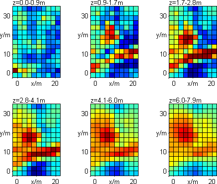
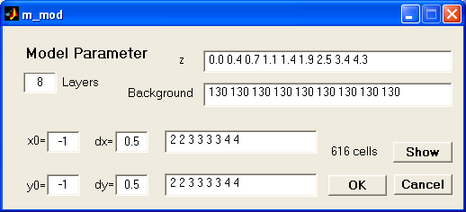
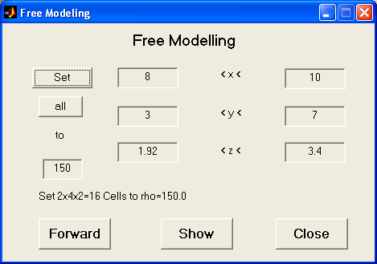

DC3DInvRes - Model Menu
Model parameter
This dialog is used to control the model parameterizations. There are two different
parameter strategies
|

|
GRID MODEL: The model cells are orthogonal hexaedra bounded
by lines of x, y and z nodes.
In this dialog all cell boundaries can be defined seperately. By changing
dx or dy a new (equidistant) vector is constructed. By changing the number
of layers and pressing button 1dsens the layer boundaries are determined using
1d-sensitivity studies of the whole data set. By editing background resistivities
for each layer a general layered model can be set. Note that the length of
background and z vector are equal since the last layer is going to infinity.
Those background values affect the fd forward result of the model.
|
|
PARA MODEL: In this model type, the length
and width can differ for different layers corresponding to different resolution
properties. In the dialog the number of layers, the layer boundaries and
its resistivities can be changed the same way like for grid model.
The lower left boundary of the model is depicted by x0 and y0. By defining
dx and dy the finest grid size in x and y direction is given, defaulting to
one half of electrode spacing. The values nx and ny denote for each layer,
how big the cells are, in multiples of dx and dy, respectively.
|

|
Free model edit
For setting up whole volumes to distinct resistivities the following dialog
is useful.

By typing boundaries for x, y and z the region can be limited and set to the desired
resistivity value. The forward modelling can be started to compare data and model response.
ASCII output of model
To save the model it can be exported into an column-oriented textfile, named
like the datafile with extension *.mod, in the following format, one row for
each model cell.
x_1 x_2 y_1 y_2 z_1 z_2 resistivity
...
ASCII input of model
The exported model (e.g. a synthetic model) can be loaded from file into workspace.
Export vtk file
The model can be exported to a vtk (Visual Toolkit) file, which can be viewed with the
free and powerful 3d viewer Paraview
Read in 3d file
not yet implemented!